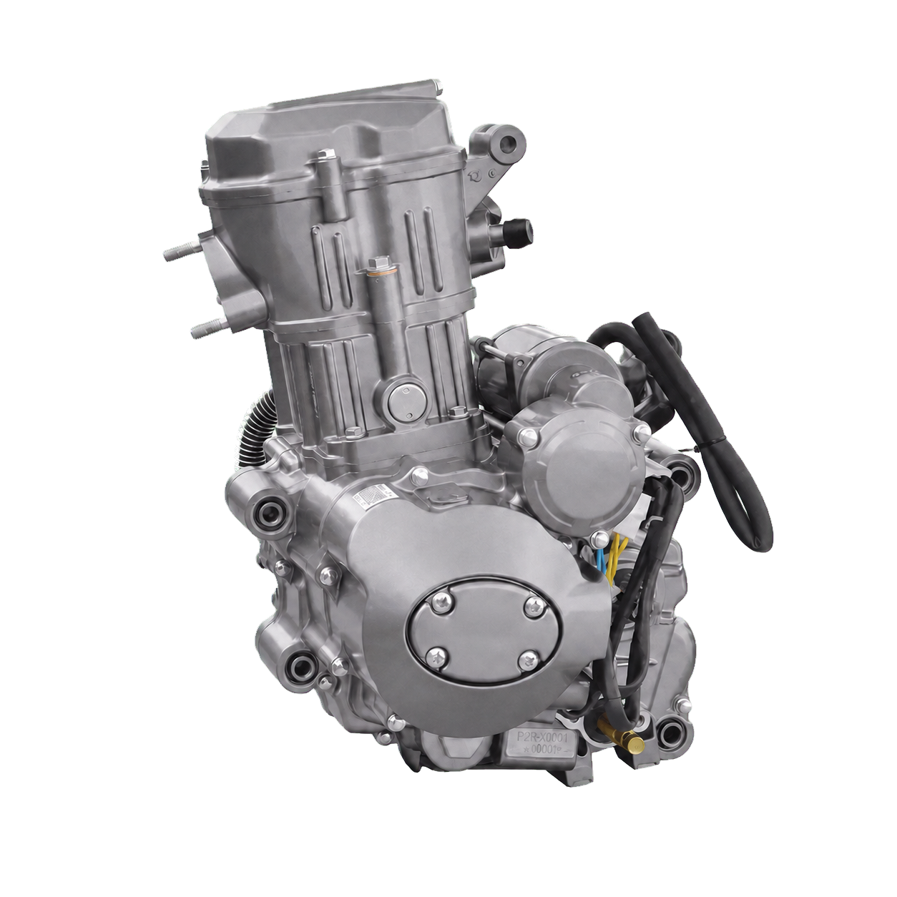

УЗБЕКИСТАН · B2B
Двигатели 150–250 см³ для грузовых трициклов
Двигатели с водяным охлаждением для грузовой работы и длительной нагрузки. Подбираем конфигурацию по фото, коду двигателя, креплениям, приводу и электрике.
- Образцы и малые партии
- Смешанная загрузка и комплекты запчастей
- Подбор по конструкции трицикла

ПРОДУКТОВЫЕ НАПРАВЛЕНИЯ
Подберите двигатель под нагрузку и конструкцию
Перед предложением модели проверяем крепления, выходной вал, систему охлаждения, электрику и трансмиссию.150–200 см³, водяное охлаждение
Для коммерческих грузовых платформ умеренной нагрузки.
- Проверка вала и креплений
- Проверка охлаждения и электрики
200–250 см³, водяное охлаждение
Для более тяжёлой и продолжительной эксплуатации.
- Проверка трансмиссии
- Проверка пространства установки
Комплект запчастей
Формируется по коду и конфигурации выбранного двигателя.
- Список деталей
- Количество для послепродажного обслуживания
ТЕХНИЧЕСКИЙ ПОДБОР
Одинаковый объём не означает одинаковую установку
| Что прислать | Что мы проверяем | Результат |
|---|---|---|
| Фото и код двигателя | Серия, конфигурация и интерфейсы | Подбор модели |
| Выходной вал и крепления | Привод и геометрия установки | Проверка установки |
| Электрика и охлаждение | Разъёмы, стартер и радиатор | Проверка подключения |
| Трансмиссия и конструкция реверса | Сторона двигателя и сторона автомобиля | Согласование комплектации |
Важно: внешний реверс, реверсная коробка или задний мост могут относиться к конструкции автомобиля. Для заказа необходимо подтвердить всю схему привода.
ПОСТАВКА
От технического запроса до предложения
Цена, количество, срок, упаковка и маршрут поставки подтверждаются после выбора конфигурации.1. Отправьте запрос
Платформа, фото, код, количество и назначение.
2. Подбор конфигурации
Проверяем интерфейсы, установку, охлаждение и привод.
3. Коммерческое предложение
Подтверждаем цену, количество, срок и условия поставки.
B2B ЗАПРОС